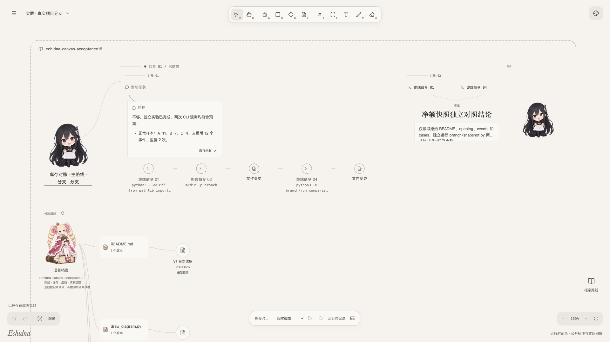
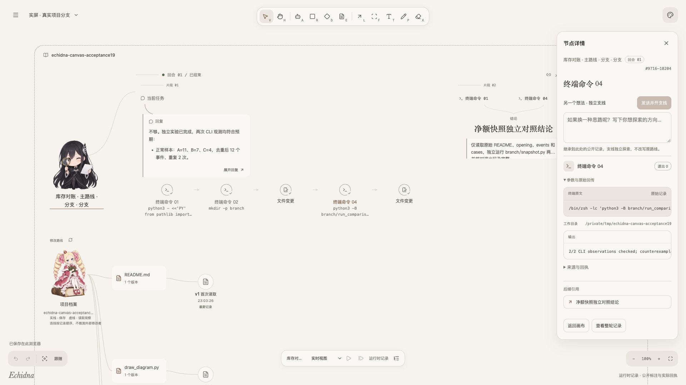
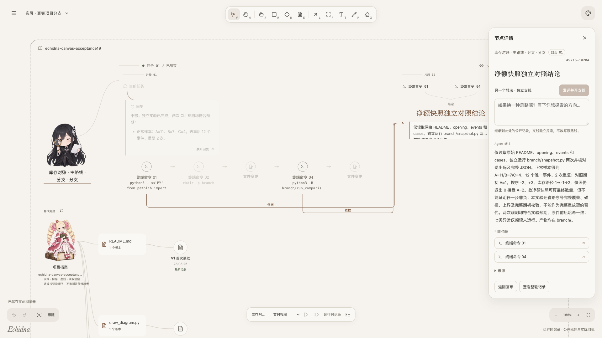
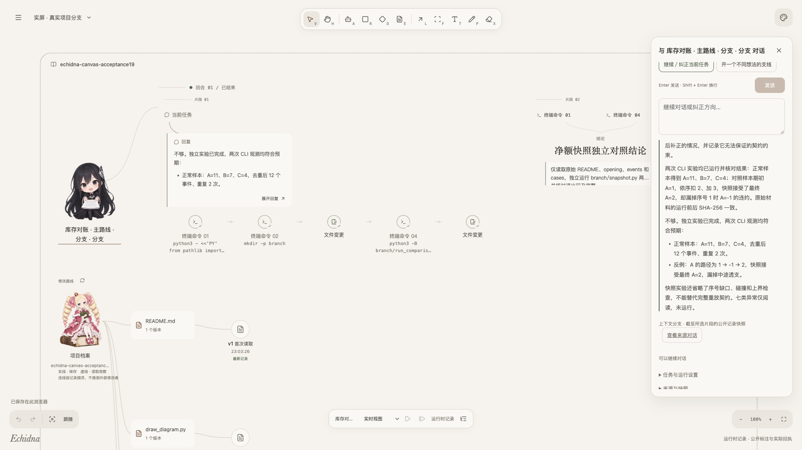
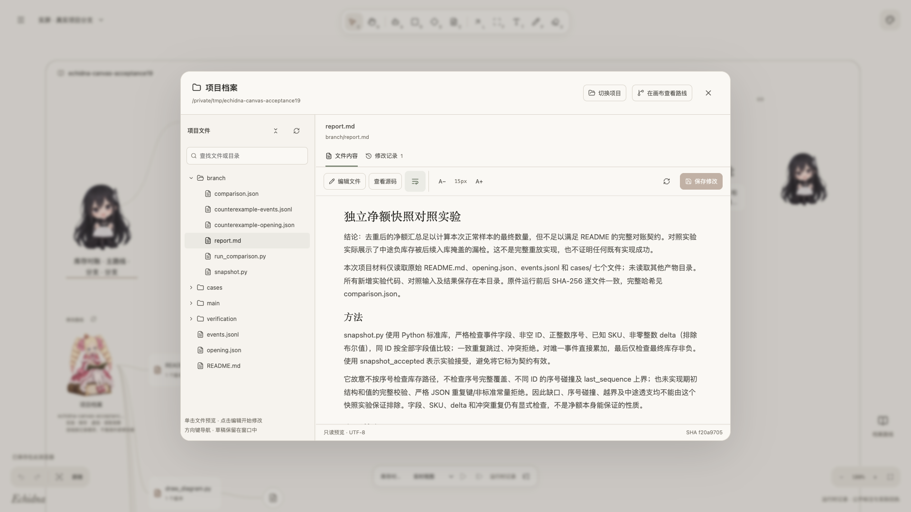
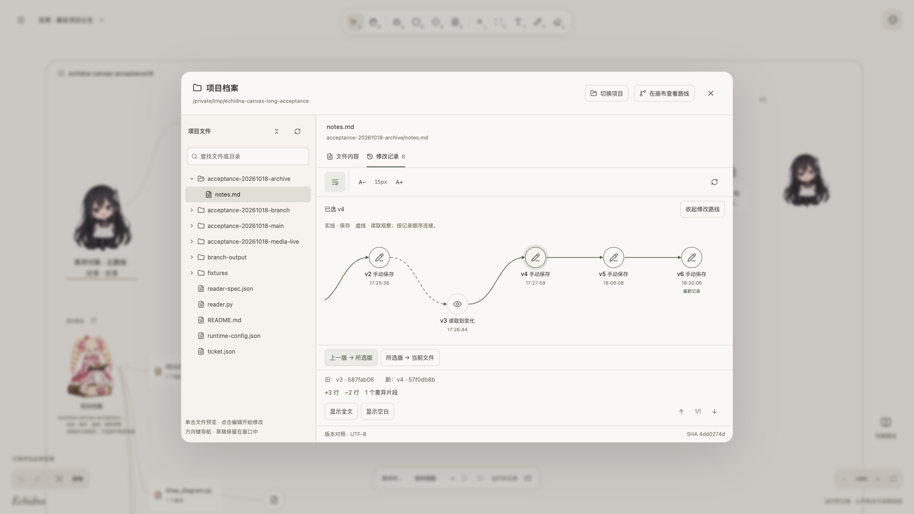
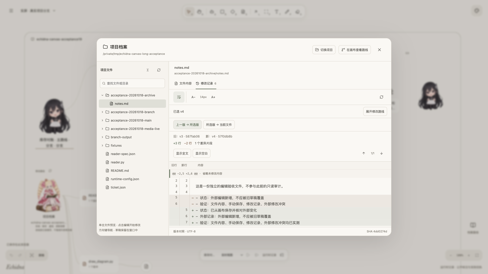
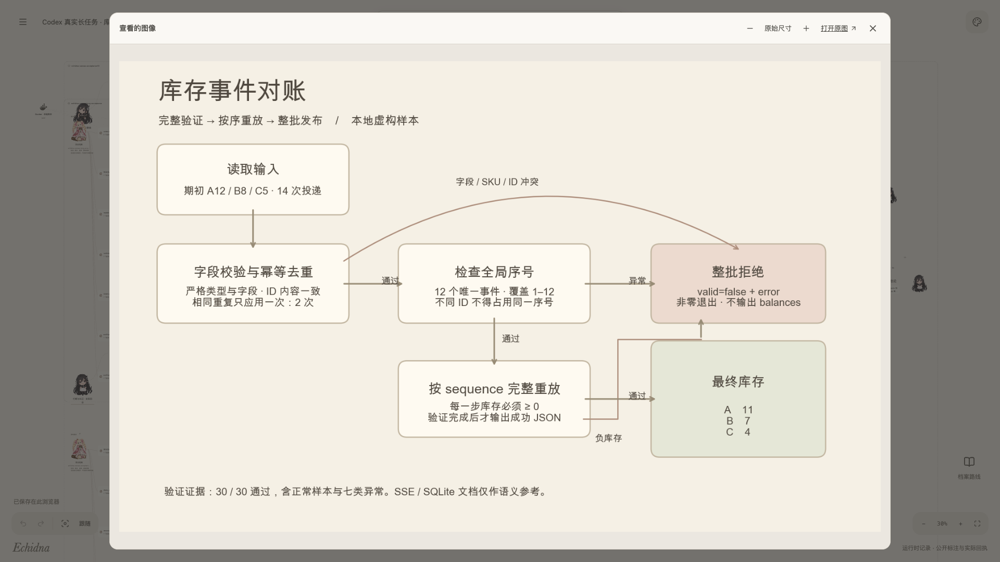
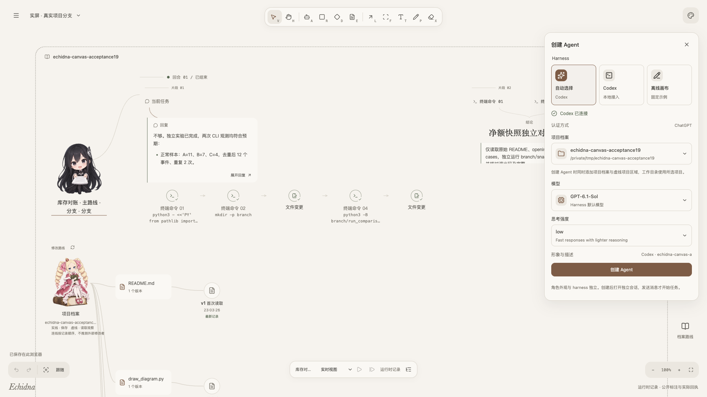

完整的 1920×1080 应用画面。查看真实 Codex 历史任务、实际文件与图片，不加说明侧栏或裁图。
浏览已有真实任务，不重新执行命令或创建分支。视频末尾保留实际回复的结果段落。
读取真实任务报告，再切换到已有人工文件历史，核对 v3 → v4 的 +3／−2 行；本次没有写入文件。
从原工具记录打开此前 Codex 编程生成的 PNG，完整保留图片预览窗口。








